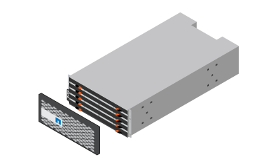
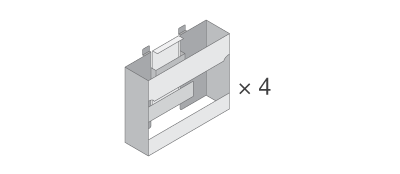
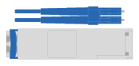
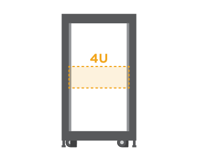

Notas de la versión
Notas de la versión
Preparación de la instalación
 Sugerir cambios
Sugerir cambios
Aprenda a preparar la instalación de su sistema de almacenamiento serie E2860, E5760 o DE460.
-
Cree una cuenta y registre su hardware en "Soporte de NetApp".
-
Asegúrese de que los siguientes elementos están en la caja que ha recibido.

Hardware para estante, bisel y montaje en rack

Asas de bandeja x4
En la siguiente tabla se identifican los tipos de cables que pueden recibir. Si recibe un cable que no aparece en la tabla, consulte "Hardware Universe" para localizar el cable e identificar su uso.
Tipo de conector Tipo de cable Uso Cables Ethernet
(si se solicita)
Conexión de gestión

Cables I/O.
(si se solicita)
Cableado de los hosts de datos
Cables de alimentación
x2 por bandeja
(si se solicita)
Encienda el sistema de almacenamiento
Cables SAS (incluidos solo con las bandejas de unidades)
Cableado de las bandejas
-
Asegúrese de proporcionar los siguientes elementos.
Destornillador Phillips número 2
Linterna
Correa ESD

Espacio en rack de 4 U: Un espacio estándar de 19 pulgadas (48.30 cm) rack para montar bandejas 4U con las siguientes dimensiones.
Profundidad: 38.25 pulg. (97.16 cm)
Anchura: 17.66 pulg. (44.86 cm)
-
Altura*: 6.87 pulg. (17.46 cm)
-
Peso máximo*: 113 kg (250 lb)
Un navegador compatible para el software de gestión:
-
Google Chrome (versión 89 y posteriores)
-
Microsoft Edge (versión 90 y posteriores)
-
Mozilla Firefox (versión 80 y posteriores)
-
Safari (versión 14 y posteriores)
-